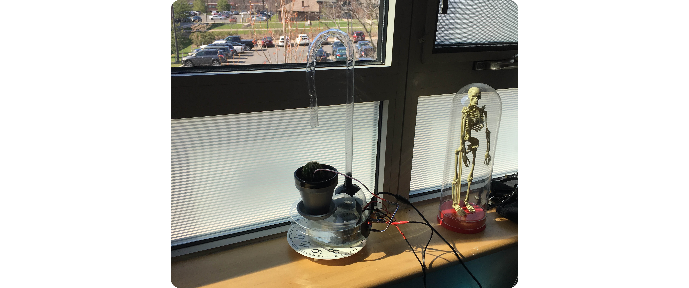

Auto Sprinkler
This was my first Arduino-based project. It familiarized me with the Arduino IDE and allowed me to experiment with some cool electronics. The system runs on an Adafruit Trinket and uses a moisture sensor to monitor the plant soil. A relay turns on the water pump when the soil moisture drops below a certain level.
The easy part of this project was writing the firmware, since it implements basic logic. It was much trickier to construct the base and pipe, and I had to take extra care with the electronics since I'm using a pump that runs on AC. In the future, I want to add a display that shows the moisture level in real-time.